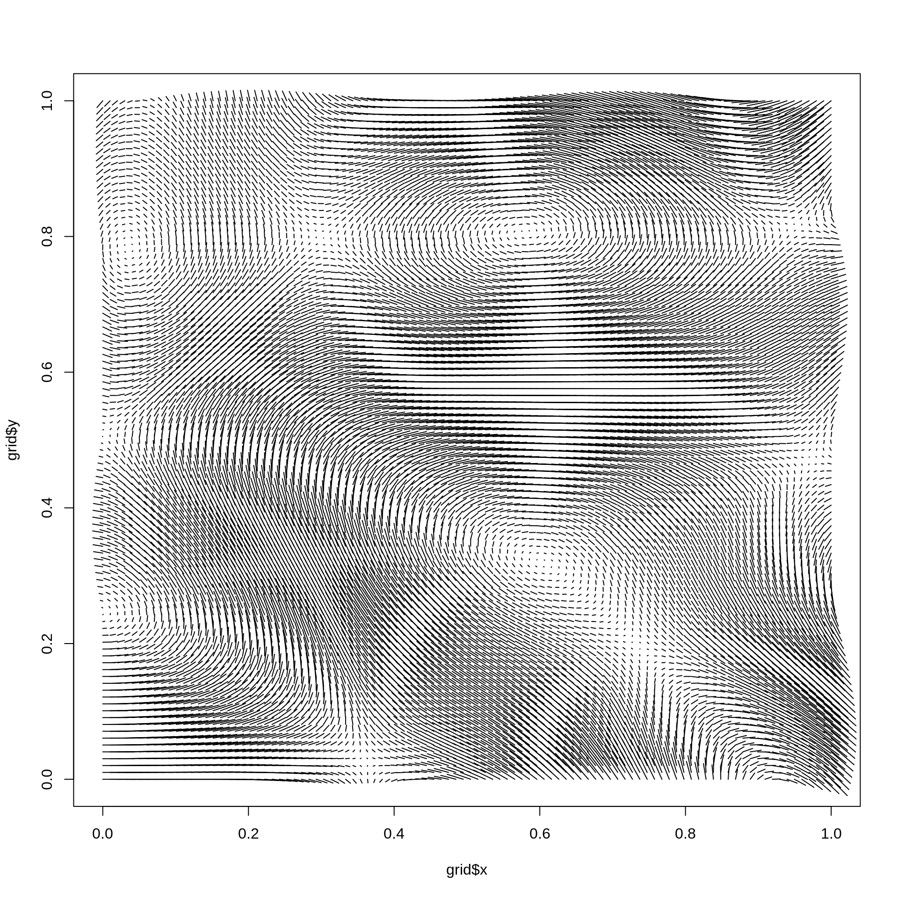
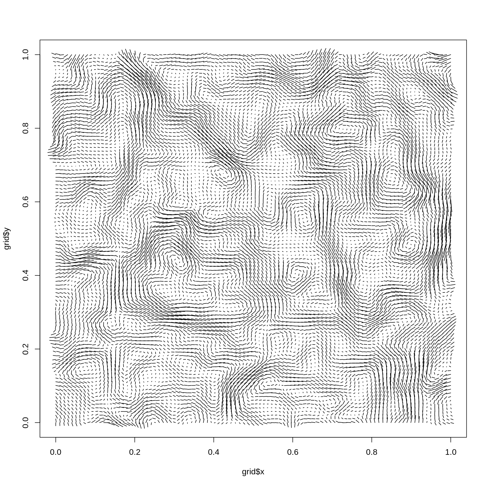

One of the use cases for fractal noise is to simulate natural phenomena. perlin/simplex noise are e.g. often used to create flow fields, but this can be problematic as they are not divergence-free (particles will concentrate at sinks/gutters in the field). An approach to avoid this is to take the curl of a field instead. The curl operator is ensured to produce divergence-free output, when supplied with continuous fields such as those generated by simplex and perlin noise. The end result is a field that is incompressible, thus modelling fluid dynamics quite well.
curl_noise(grid, generator, x, y, z = NULL, ..., seed = NULL, delta = NULL, output = NULL)
| grid | A long_grid object or a data.frame |
|---|---|
| generator | The noise generating function, such as gen_simplex, or
|
| x, y, z | The coordinates to generate the curl for as unquoted expressions |
| ... | Further arguments to |
| seed | A seed for the generator. For 2D curl the seed is a single
integer and for 3D curl it must be a vector of 3 integers. If |
| delta | The offset to use for the partial derivative of the |
| output | The name to save the generated fields in. Must be a character
vector with 2 or 3 strings in, for 2D and 3D curl respectively. If |
Bridson, Robert. Hourihan, Jim. Nordenstam, Marcus (2007). Curl-noise for procedural fluid flow. ACM Transactions on Graphics 26(3): 46. doi:10.1145/1275808.1276435.
grid <- long_grid(seq(0, 1, l = 100), seq(0, 1, l = 100)) # Use one of the generators grid <- curl_noise(grid, gen_simplex, x = x, y = y, output = c('x1', 'y1')) plot(grid$x, grid$y, type = 'n')# If the curl of fractal noise is needed, pass in `fracture` instead grid <- curl_noise(grid, fracture, noise = gen_simplex, fractal = fbm, octaves = 4, x = x, y = y, output = c('x1', 'y1')) plot(grid$x, grid$y, type = 'n')